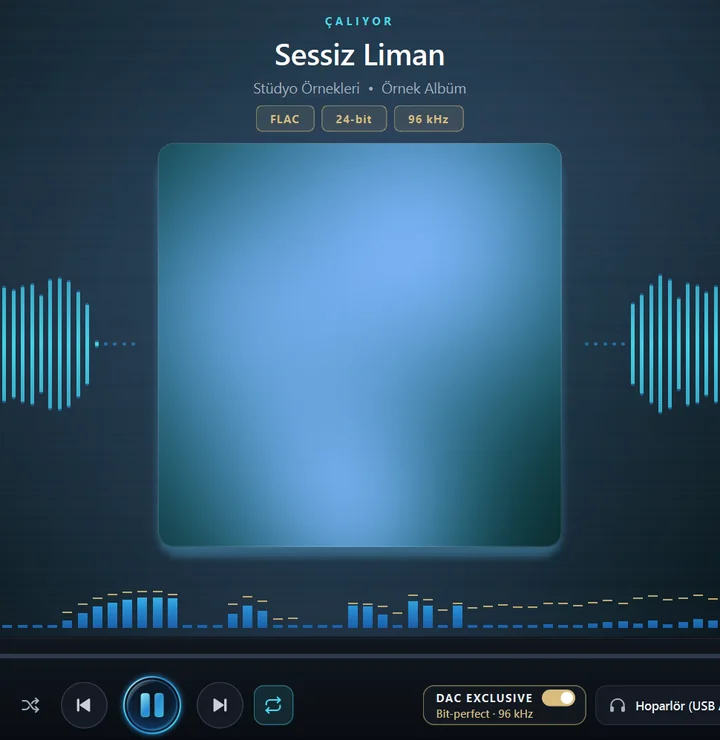
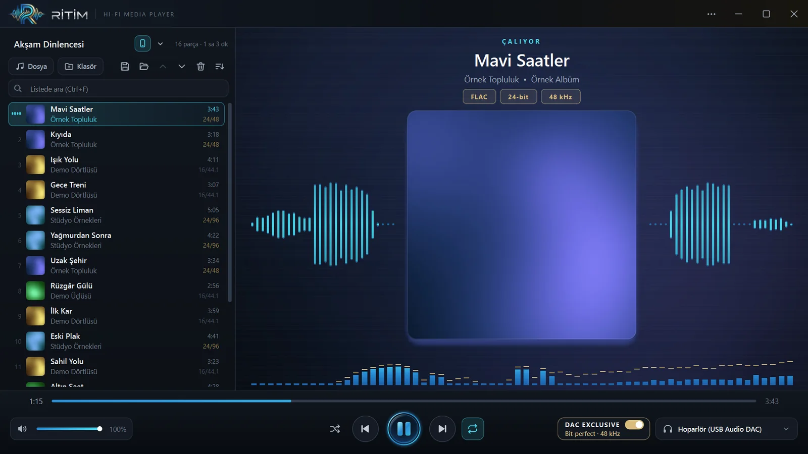
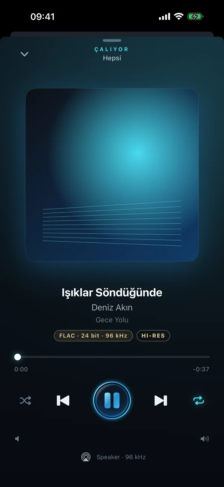
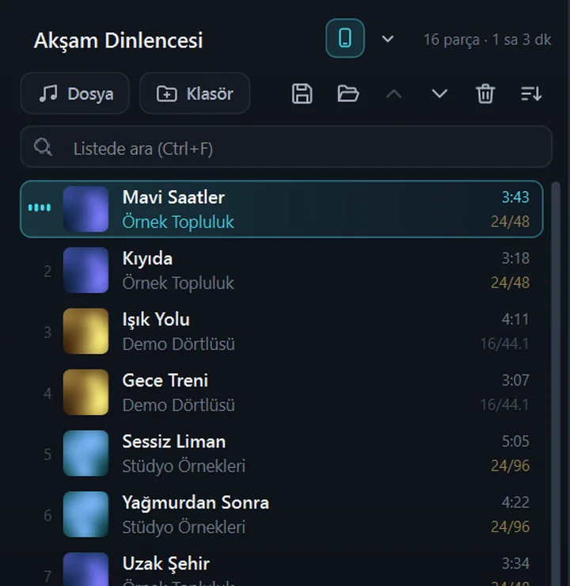
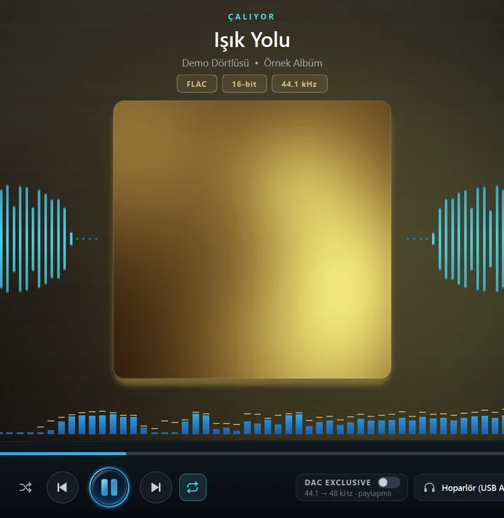
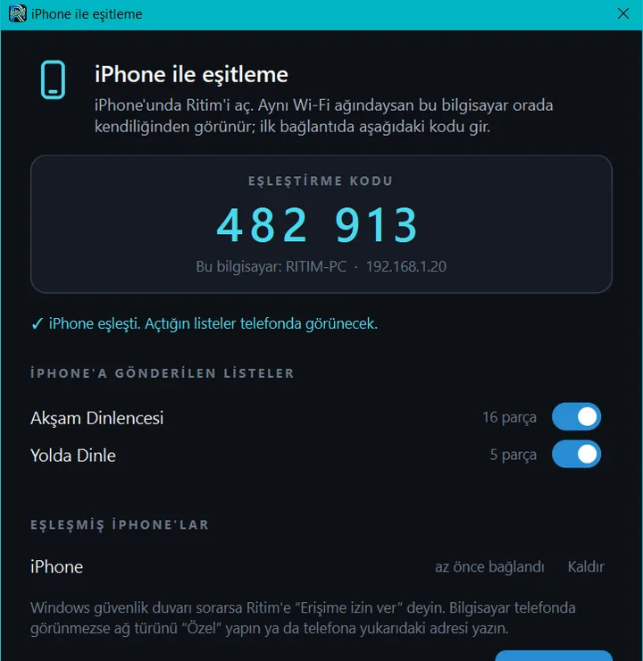
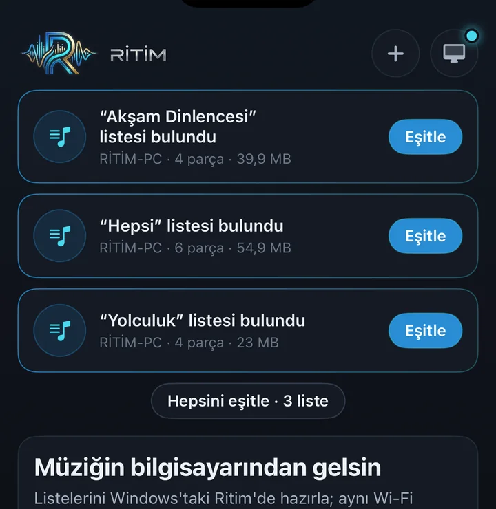
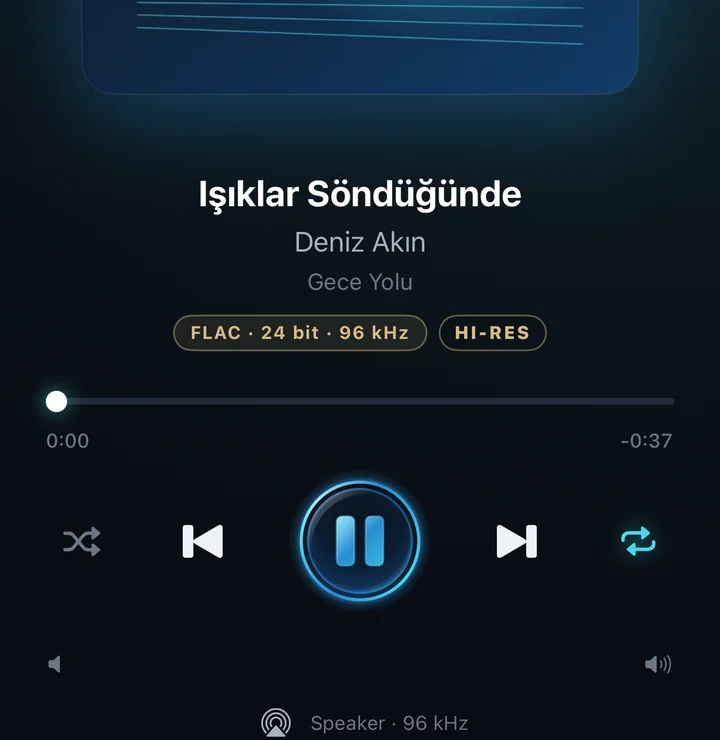

Windows
Bit-perfect çalma
DAC Exclusive açıkken ve ses %100'deyken örnekler DAC'ına dosyadaki hâliyle gider. Biçim, bit derinliği ve örnekleme hızı her an görünür.
Bilgisayarındaki müzik dosyalarını kayıpsız çalan hi-fi çalar. DAC Exclusive açıkken örnekler DAC'ına hiç değişmeden gider; listelerin Wi-Fi ile iPhone'una gelir.


Kendi müzik arşivini en iyi hâliyle dinlemek isteyenler için.

DAC Exclusive açıkken ve ses %100'deyken örnekler DAC'ına dosyadaki hâliyle gider. Biçim, bit derinliği ve örnekleme hızı her an görünür.

FLAC, ALAC, WAV, AIFF, MP3, AAC/M4A, Ogg Vorbis, Opus ve WMA çalar. Parçalar arasında boşluk yoktur; canlı kayıtlar ve kesintisiz albümler kesilmeden akar.

Arayüz ve görselleştirici albüm kapağının rengine bürünür. Listende anında ararsın, sıralarsın, sürükleyerek düzenlersin.

Bir kez 6 haneli kodla eşleşirsin; işaretlediğin listeler Wi-Fi ile iPhone'una gider. Kablo yok, bulut yok, hesap yok.

Parçalar kapaklarıyla iner, internet olmadan da çalar. Bilgisayarda listeye parça eklersen iPhone farkı görür ve yalnızca yenileri indirir.

Her parçanın biçimi ve kalitesi bir bakışta; yüksek çözünürlüklü dosyalarda altın renkli Hi-Res işareti. USB DAC dosyanın hızında çalışabilir.
Ayrıca medya tuşları, görev çubuğu önizlemesinde oynatma düğmeleri, ReplayGain ve M3U, M3U8, PLS, WPL listeleri. Arayüz Türkçe ve İngilizcedir.
Ritim kendi bilgisayarında çalışır. iPhone ile eşitleme de yalnızca evinin ağında olur.
Üyelik, reklam ya da kullanım takibi yoktur. Gizlilik politikası
Müzik dosyaların değiştirilmez; Ritim onları yalnızca çalar.
Ücretsiz; kurulum bir dakika sürer. Bir sorun olursa Destek sayfasına bak.
İndirme sayfasına gitRitim is a free hi-fi music player for Windows that plays the music files on your PC in full lossless quality. With DAC Exclusive on and the volume at 100%, the samples reach your DAC exactly as they are in the file (bit-perfect). Its iPhone app receives your playlists over Wi-Fi and plays them without an internet connection. No account, no ads, no data collection. The interface is in English and Turkish.